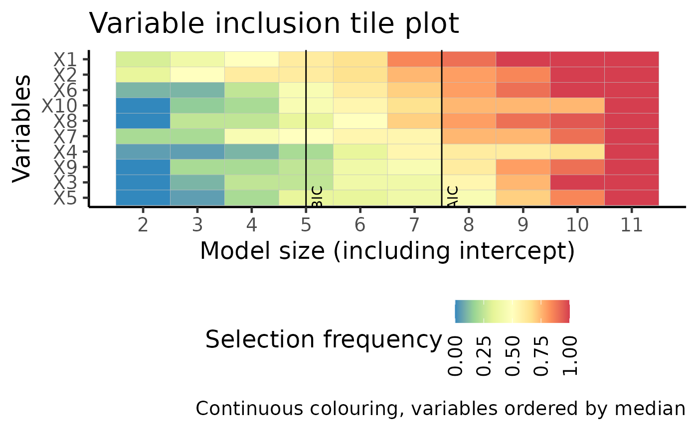

Generic plotting function for class boot_apes
Source: R/plot.boot_apes.R, R/plot_ic-boot_apes.R, R/plot_ma-boot_apes.R, and 2 more
plot.boot_apes.RdThis function is suitable for a list of bootstrap APES outputs. From each bootstrap run, APES stores log-likelihood for every model it considered. In this function, we then consider general information criterion (GIC) of the form -2*logLike + penalty * modeSize. For each penalty and each bootstrap run, we apply this GIC to find a model of the optimal fit, and then look at which variables are selected in that model. The frequency of a variable selected across different penalties are then avaraged across all bootstrap runs.
This function displays the same information as plot_vi, but in a tile plot format.
# S3 method for boot_apes plot( x, type = c("vip_tile", "vip", "path", "ma"), order = c("BIC", "AIC", "median"), ... ) plot_path_boot_apes(x, order = "BIC") plot_ma_boot_apes(x, order = "BIC") plot_vip_boot_apes(x) plot_vip_tile_boot_apes(x, order = "median")
Arguments
| x | An object of class |
|---|---|
| type | Type of plot:
|
| order | The ordering of variables. Either "median", "AIC" or "BIC" |
| ... | additional parameters (not currently used) |
Value
A ggplot output corresponding to the select plotting type.
A ggplot of AIC/BIC path plot. Each curve is one bootstrapped APES run.
A ggplot. From each bootstrap run, APES stores coefficient values averaged across all models considered. As we have multiple bootstrapped APES output, we can cummulatively average these model averaged coefficient values across all bootstrap runs. On the final plot, we should be able to see variables of non-zero coefficients show up distinctly away from zero.
A list.
boot_vars_plotdfa tibble with all the necessary values to plot a variable inclusion plotvip a variable inclusion plot in ggplot format.
A list.
apes_mle_beta_binary_plotdfa tibble with all the necessary values to plot a tile variable inclusion plotvar_tile_plota ggplot with continuous colouringvar_tile_plot_categorya ggplot with discrete colouring
Author
Kevin Wang
Kevin Wang
Kevin Wang
Kevin Wang
Examples
set.seed(10) n = 100 p = 10 k = 1:10 beta = c(1, -1, rep(0, p-2)) x = matrix(rnorm(n*p), ncol = p) colnames(x) = paste0("X", 1:p) y = rbinom(n = n, size = 1, prob = expit(x %*% beta)) data = data.frame(y, x) model = glm(y ~ ., data = data, family = "binomial") list_result = apes(model = model, n_boot = 20) plot(list_result, type = "vip_tile")#> $apes_mle_beta_binary_plotdf #> # A tibble: 110 x 5 #> variables model_name freq_selected model_size freq_selected_category #> <fct> <fct> <dbl> <int> <fct> #> 1 intercept apes_model_2 1 2 (0.8,1] #> 2 intercept apes_model_3 1 3 (0.8,1] #> 3 intercept apes_model_4 1 4 (0.8,1] #> 4 intercept apes_model_5 1 5 (0.8,1] #> 5 intercept apes_model_6 1 6 (0.8,1] #> 6 intercept apes_model_7 1 7 (0.8,1] #> 7 intercept apes_model_8 1 8 (0.8,1] #> 8 intercept apes_model_9 1 9 (0.8,1] #> 9 intercept apes_model_10 1 10 (0.8,1] #> 10 intercept apes_model_11 1 11 (0.8,1] #> # … with 100 more rows #> #> $var_tile_plot#> #> $var_tile_plot_category#>#> $boot_vars_plotdf #> # A tibble: 1,023 x 3 #> penalty variables boot_select_prob #> <dbl> <chr> <dbl> #> 1 0 intercept 1 #> 2 0 X1 1 #> 3 0 X2 1 #> 4 0 X3 1 #> 5 0 X4 1 #> 6 0 X5 1 #> 7 0 X6 1 #> 8 0 X7 1 #> 9 0 X8 1 #> 10 0 X9 1 #> # … with 1,013 more rows #> #> $vip#>